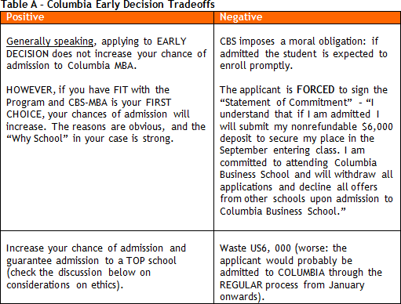

Sure.


Let’s check the doubts that our Heroes had last year. Most probably their doubts are on your mind, or should be.

Great.
Columbia Business School (CBS) uses a peculiar admission system: instead of ROUNDS it has a “rolling basis process”.
What is Early Decision (ED)?
CBS tries to identify applicants who have fit and interest in their program. Those who have CBS as their first choice will submit their application between August and October and will have an answer in as long as tem weeks afterwards. If they’re admitted, they have two weeks to send a down payment $6,000 for tuition (“nonrefundable”). Please read carefully, see.
What are the tradeoffs involved in the option to apply in the Early Decision round?
Observe my Table A below.

Do you think that Columbia’s Early Decision round ends up screening the bankers?
Observe the “diversity” of the group on Table B. Do not forget that this universe is biased: Early Decision indicates that CBS was the applicants’ first choice.
If you had Wharton as first option, would you try CBS-ED?
I cannot see the relevance of this kind of speculation. Megaron’s role is to explain to applicants the CORRECT/ETHICAL procedure in the application process. Oh, yes, and also ENCOURAGE the applicants not to lie in their essays – we are not indifferent regarding this issue. However, about CBS-ED, our position is “It’s your call!”
Have you met people who were accepted to CBS-ED, but ended up going to Wharton, Chicago, etc...?
Yes. Some of them lost US$6,000; others were lucky regarding the application date and did not have to touch their wallets.
How to decide?
Ask former students, family members, or spiritual mentors and, of course, get more information. Read internet forums. Seek help so that your decision respects your values. And be very careful about networking with CBS alumni.
Do AdComs exchange information? If I “break the rule” with CBS, will Wharton get to know that?
I do not have that information. I do not believe that there is exchange of personal information – your application is not public.
Given that it is a rolling basis system, is there a significant difference between applying on the first or in the last day?
By analyzing the applications of former applicants who hired Megaron and applied ED in the past years, I do not believe that there is any competitive advantage in sending the application in August or September (or same deadline).
The reasons that justify an applicant’s option for the Lauder Program must be complementary to those that explain studying at Wharton for 20 months.
Many say that by applying to Lauder, the applicant will have higher chance of admission at Wharton.
Once again, do not seek generic answers. There are no universal rules for the MBA application process. We need to evaluate each scenario. I have already had students who were admitted to Wharton and yet denied at Lauder.
I hear you.
At this moment you should worry about understanding the values of your candidacy. Soon we will discuss the values of the programs. You will apply only to the schools that meet your post-MBA project.
The students admitted to Lauder will start the process in May: heavy investment.
Not to mention that you will have to take the two programs simultaneously. Your investment if energy and commitment is also higher. Don’t even think about chances of admission.
At least for now.
Yes, later we will talk about chances if you prove that Lauder makes sense in your life.
That’s it for the time being. Send me an e-mail (megaron@gmail.com) if you have any more doubts or questions at this moment of your Marathon.
Thank you, Megaron.